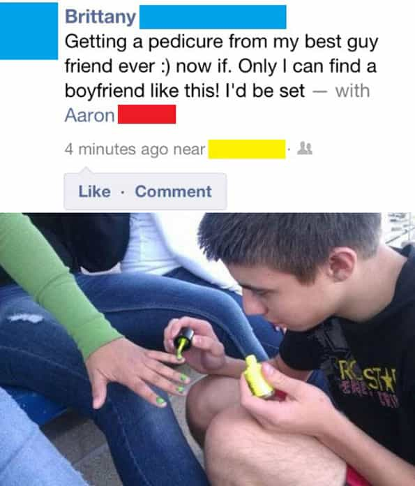

Come Mother’s Day you’ll see how much we cherish the ‘mother’ in the United States. Some of us find this glorification annoying and wrong, but does not mean that we hate our mothers. We love them, of course—it’s just that some us had strong fathers, so we know that each parent had a specific role in our growth. Having an unbalanced and illogical affection towards your mother can negatively affect a man.
Right now, more men acting like their mothers than ever before in history. I do not have the statistic, but a night out in any bar will prove my point. I actually run into guys who are patiently waiting for the hot girl to get off her phone, even though there are many others in the vicinity. Or even worse, guys go out with sexy women as ‘platonic friends’.

These actions are blamed on weak-fathers and single-mothers. I know there are situations where the father tragically dies and there is no other choice than to have only one parent. Yet, a strong father would’ve taught his wife the values he wants instilled into his children. I also realize that some men are kept away from their kids through the legal system. I do not speak of these unfortunate men; life is chaotic. Instead, I aim at the men who wish to make their mother so happy that they themselves have become them. There comes a time where you must change yourself no matter the circumstance of your childhood.
Without a strong father, the weak male will create of habit of treating women the way that they see their mother, like the supreme goddess. Due to this, mama’s boys relate to their mom and other women so they begin to act like women. I will talk about habits that mama’s boys have. If you do any of these, I suggest you begin to hang around other men through diverse hobbies.
1. They are too scared to hit on women
There is no reason a single male should remain quiet if he’s in the presence of a woman he wants. A mother will have the tendency to raise her son to adore her and other women in general. As we all know, women say they want to be treated like queens but in reality, they like trouble. Men enjoy trouble, too. That’s why daring men always get the girl.
A mother will teach her son that a man should go to great lengths to please the woman he wants. So when a mama’s boy sees a woman he likes, he will day dream of the perfect way to pick her up. The problem comes from over-analyzing what to say because you do not want to offend the female. That creates a lack of confidence that begets muteness. You see, a mama’s boy is also taught to never make mommy cry, and he’s looking a girl that’s just like his sweet mum.
There is saying that every self-cucked man knows: nice guys finish last. You must understand why this is true. The nice guy is a liar—you want to fornicate with her but would rather dance around the truth than be upfront. A liar is not a nice person. Your mother was wrong
2. They befriend women they want to have sex with
When I go out on a night in the town, there is a guarantee that I’ll run into a couple who are ‘just friends’. You can not blame the woman if you find yourself in these types of dates regularly. A man should not have more than one platonic female friend in his life.
Men who go on “friend dates” with good-looking women waste their time in two ways. One, they are not out meeting women they can actually have a sexual relationship with. Second, they waste time with a woman who does not find them sexually attractive instead of making themselves into someone women would want. Listen, mama’s boy: the girl you pine and consider a ‘close friend’ is only out with you because she had nothing better to do.
3. They have more than one female friend

A man is only allowed one female friend in his life. Meaning, if you had a true platonic female friend in high school and you lost touch with her, you do not get to have another. A man can not relate to women because he is a man. This applies to girlfriends or wives of your male friends.
Of course, you can be cordial with women you don’t want or women that turned you down, but nothing more than that. If you currently find yourself with two or more female friends, decide the one you don’t want to bed and make her your confidant. Try to bed the other or drop her.
4. They are emotional like women

A mama’s boy will crumble under pressure from the opposite sex. This is why they do not go after the woman they want. Instead, they take the less aggressive route and try to befriend them. One reason they do this is that they cannot handle the pain of rejection.
Mama’s boys would rather live in a made up reality where they think that playing the ‘nice guy’ will eventually earn them enough points to bag the girl of their fancy. You see, rejection from women is in contrast to what their mothers have told them. The world will remind you that you are not special and people can choose to have a life without you in it. When a women rejects their advances, it feels like their own mother is rejection their affection. This is too much to handle for a mama’s boy.
5. They think their mother is an unfallable goddess
The mama’s boy has yet to understand that their sweet mother was just another chick to their fathers. Try and insult the mother of a mama’s boy and enjoy the reaction you will see. Some of them will be so flabbergasted by your defaming that they’ll lose their words. Others will actually try to get violent.
No matter how they react, they will do it with teary-red eyes. A mama’s boy could likely handle the passing of their father, but would contemplate suicide when mama finally croaks. In the mind of a hardened mama’s boy, they are married to their mothers. They are her sole protector and anyone who threatens her honor or their relationship with mummy must be the devil.
Conclusion
There is nothing wrong with loving your mother. It’s when that love spirals out of control and you begin to act like her, or ‘date’ her, that you must analyze yourself. Your mother will die and she did slutty things to your dad (and probably other guys, too). She is not a saint. You can still become the man you’re meant to be if you can let go of mama’s nipple.
Read More: Why You Should Beware Of “Inverted” Narcissist Women